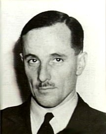
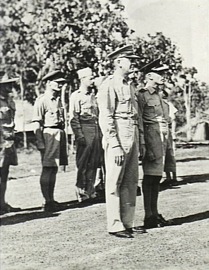
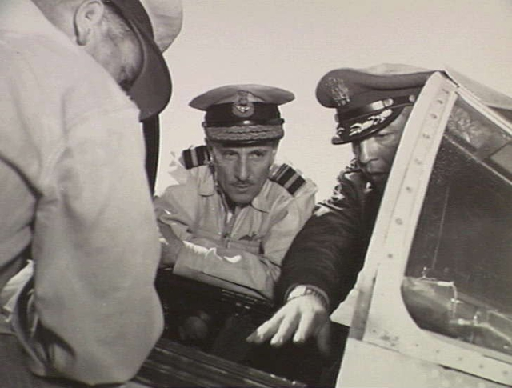

Main Page
Content
Featured Content
Current Events
Random Article
Donate to wikipedia
Wekipedia Store
From Wikipedia, the free encyclopedia
Air Vice-Marshal Joseph Eric Hewitt, CBE (13 April 1901 – 1 November 1985) was a senior commander in the Royal Australian Air Force (RAAF). A Royal Australian Navyofficer who transferred permanently to the Air Force in 1928, he commanded South West Pacific Area, in the early 1930s, and on exchange in Britain shortly before World War II. Hewitt was appointed the RAAF's Assistant Chief of the Air Staff in 1941. The following year he was posted to Allied Air Forces Headquarters, as Director of Intelligence. In 1943, he took command of No. 9 Operational Group, the RAAF's main mobile strike force, but was controversially sacked by the Chief of the Air Staff, Air Vice Marshal George Jones, less than a year later over alleged morale and disciplinary issues.
Described as a "small, dapper man", [1] who was "outspoken, even 'cocky'", [2] Hewitt overcame the setback to his career during the war and made his most significant contributions afterwards, as Air Member for Personnel from 1945 to 1948. Directly responsible for the demobilisation of thousands of wartime staff and the consolidation of what was then the world's fourth largest air force into a much smaller peacetime service, he also helped modernise education and training within the RAAF. Hewitt was appointed a Commander of the Order of the British Empire in 1951, the same year he became Air Member for Supply and Equipment. Retiring from the military in 1956, he went into business and later managed his own publishing house. He wrote two books including Adversity in Success, a first-hand of the South West Pacific air war, before his death in 1985 aged 84.
Born on 13 April 1901 in Tylden , Victoria, Joseph Eric Hewitt was the son of Joseph Henry Hewitt and his wife Rose Alice, née Harkness.[3][4] He attended Scotch College, Melbourne, before entering the Royal Australian Naval College at Jervis Bay in 1915, aged 13.[1] After graduating in 1918, Hewitt was posted to Britain as a midshipmen to serve with the Royal Navy. [3] He rose to lieutenant in the RAN before volunteering for secondment to the Royal Australian Air Force (RAAF) as a flight lieutenant in January 1923.[1][5] Hewitt undertook the pilots'.. course at No. 1 flying Training School, Point Cook, and graduated at the end of the year.[6] He was further seconded... to the Royal Air Force in May 1925,[7] holding a temporary commission as a flying officer until September.[8] He married... Lorna Bishop in Sydney on 10 November; they had three daughters.[3]
Hewitt was promoted wing commander in January 1938. Returning to Australia, he was appointed senior air staff officer (SASO) at RAAF Station Richmond, New South Wales, in June.[3] In May 1939, Hewitt was chosen to lead No. 10 Squadron, due to be formed on 1 July at the recently established RAAF Station Rathmines, near Lake Macquarie He was preparing to depart for England to take delivery of the unit's planned complement of Short Sunderland flying boats when he broke his neck riding his motor cycle near Richmond, and had to forgo the assignment while he recovered. Fit for duty by August, he was given command of the Rathmines base to manage the deployment of No. 10 Squadron and its aircraft, but this was suspended due to the outbreak of World War II in September, and the Sunderlands and their RAAF crews remained in Britain for service alongside the RAF.[13]
20 November 1939, the RAAF formed No. 1 Group in Melbourne,[14] which evolved into Southern Area Command early in 1940 with Hewitt as senior administration staff officer.[4][15] Having been promoted group captain in December 1939, Hewitt was made Director of Personal Services (DPS) at RAAF Headquarters in July 1940.[3] He was appointed an Officer of the Order of the British Empire on 11 July for his performance as SASO at Richmond.[3][16] Described by author Joyce Thompson as having "a Calvinist background and rigid ideas on women's place in society", as DPS Hewitt opposed the creation of the V Air Force (WAAAF) and later advocated that its members be enrolled on a contractual basis rather than enlisted or commissioned as Permanent Air Force staff[17] Promoted acting air commodore, he became Acting Deputy Chief of the Air Staff in October 1941.[3][18] In January 1942, he was posted to the staff of American-British-Dutch-Australian Command n the Dutch East Indies.[3] Hewitt served as Assistant Chief of the Air Staff in March and April before being assigned to the newly formed Allied Air Forces Headquarters (AAF HQ), South West Pacific Area (SWPA), as Director of Intelligence.[18][19] He established cordial working relations with his American peers at AAF HQ, becoming a confidant of its commander, Major General George Kenney.[2]
in February 1943, Hewitt was appointed Air Officer Commanding (AOC) No. 9 Operational Group (No. 9 OG).[20] The RAAF's main mobile strike force, No. 9 OG initially comprised seven Australian combat squadrons and came under the control of the US Fifth Air Force. [20][21] The month he took over, Hewitt's squadrons were reorganised into two wings based in New Guinea: No. 71 Wing, comprising units at Milne Bay New Guinea, and No. 73 Wing, comprising those at Port Moresby.[22] In March, No. 9 OG led the RAAF's contribution to the Battle of the Bismarck Sea, "the decisive aerial engagement" in the SWPA according to General Douglas MacArthur , resulting in 12 Japanese ships being sunk.[23] Hewitt occasionally flew with his crews on operations, contrary to General Kenney's policy against commanders taking such risks.[24]
No changes were made to command arrangements in the South West Pacific following this episode, and Hewitt continued to lead No. 9 OG in its bombing and strafing campaign against Japanese airfields and lines of communication in New Britain north-east of New Guinea. By mid-June 1943, he had set up Group Headquarters at Milne Bay, and No. 73 Wing HQ attack Goodenough Island. On 22 July, he mounted an operation against Gasmata airfield using 62 aircraft from five of his squadrons, the largest strike undertaken by the Australians to that date.[28] No. 9 OG would take most of the credit for the RAAF reaching a peak of 254 tons of bombs dropped in October, as against 137 tons delivered the previous month.[29] On 8 November, Hewitt sent out a formation of three Bristol Beauforts in a severe electrical storm to attack the heavily defended harbour at Rabaul. This was conceived as a "make or break" effort to prove the worth or otherwise of the Beaufort as a torpedo bomber, in which role it had so far been a disappointment; in what the official history of the RAAF in World War II described as "an heroic attack", at least one enemy tanker was struck, for the loss of one Beaufort.[30] The planning and execution of the raid led to conflict between Hewitt and the commanding officer of the official history of the RAAF Wing Commander G. D. Nicoll, and Hewitt dismissed Nicoll shortly afterwards; the decision was swiftly reversed by Air Vice Marshal Jones.[3]
Following his retirement from the Air Force in 1956, Hewitt joined International Harvester Co. Australia as Manager of Education and Training. He became a trustee of the Services Canteen Trust the same year, serving in this position until 1977. Having retired from International Harvester in 1966, Hewitt became an author in later life and wrote two books on his experiences in the military.[4] The first, Adversity in Success, was published in 1980 and gave his account of the air war in the South West Pacific. He followed it in 1984 with The Black One. Hewitt also acted as chairman and managing director of his own publishing house, Langate Publishing.[1][4] Predeceased by his wife Lorna, he died in Melbourne on 1 November 1985, and was survived by his daughters.[3] Historian Alan Stephens credits Hewitt with being primarily responsible for the "education revolution" that took place in the RAAF between 1945 and 1953, noting that Hewitt's initiatives while Air Member for Personnel were carried on by his successor in the position, Air Vice Marshal Frank Bladin.[49] According to Stephens and Jeff Isaacs , the importance of RAAF College and the Apprenticeship Training Scheme in contributing to the professionalism of the post-war service "cannot be over-stated".[1] Air Vice Marshal Ernie Hey, the Air Member for Technical Services from 1960 through 1972, declared that the apprenticeship programme was "one of the best things" the RAAF ever established and that its graduates—numbering some 5,500 from 1952 to 1993—were "absolutely outstanding".[50] Joe Hewitt is commemorated by Hewitt Reef in Great Barrier Reef Marine Park, named in his honour by the survey team on HMAS Moresby, with whom he worked as a member of No. 101 Flight in 1926–1928.[9] Hewitt also founded an eponymous trophy for small arms proficiency in the Air Force.[51][52]